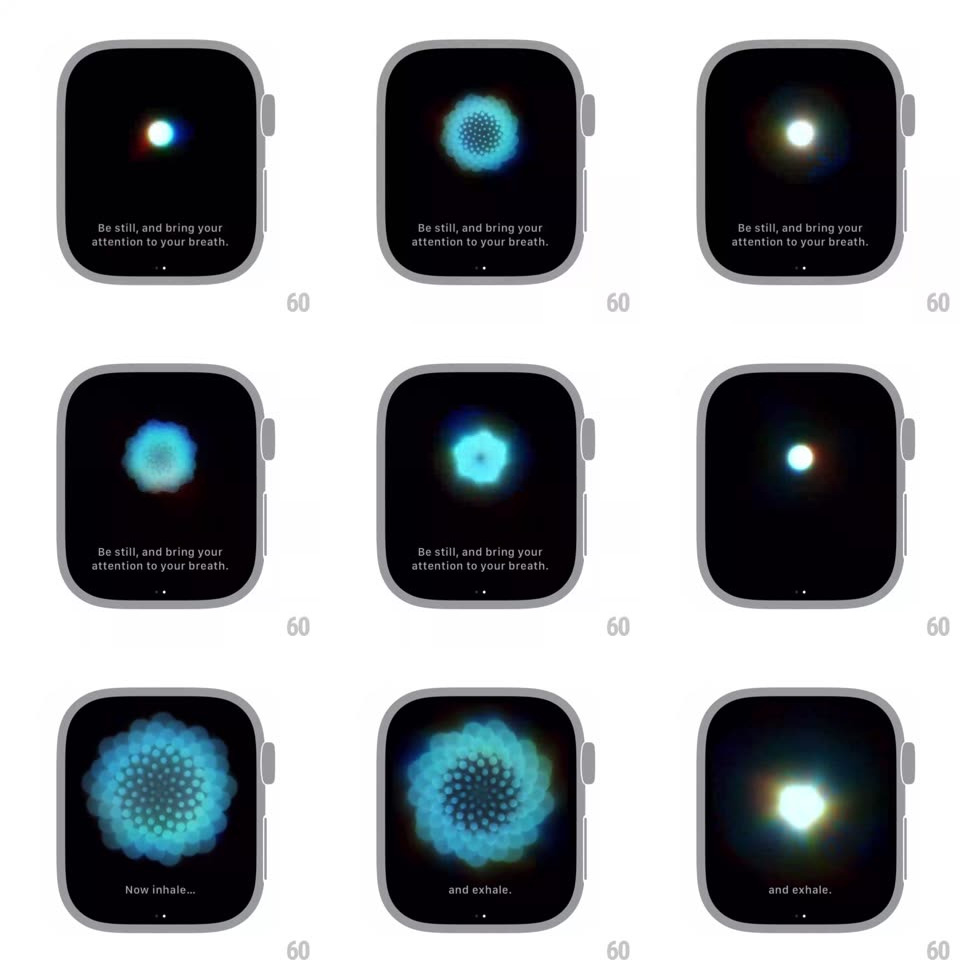

Media
Frame-by-frame

Rebuild this animation 1:1: the watchOS Mindfulness breath flower - a tiny glowing orb blooms into an organic geometric flower of hundreds of small cyan dots for the inhale, then contracts back to the orb for the exhale, guided by "Be still..." / "Now inhale..." / "and exhale." captions.

Rebuild this animation 1:1: the watchOS Mindfulness breath flower - a tiny glowing orb blooms into an organic geometric flower of hundreds of small cyan dots for the inhale, then contracts back to the orb for the exhale, guided by "Be still..." / "Now inhale..." / "and exhale." captions.
## Integration
Integration: stack-agnostic spec - springs given as stiffness/damping, timed motions as duration + curve; map every value to your framework and animation library of choice.
## Scene
Black watch screen: centered particle bloom, caption text near the bottom ("Be still, and bring your attention to your breath.", later "Now inhale...", "and exhale."), a page dot indicator at the very bottom.
## Motion spec
Pattern: particle flower breathing cycle.
- Intro: a soft white-cyan glowing orb fades in and pulses gently (scale 1 -> 1.08, ~2s) while the "Be still..." caption holds.
- Inhale (~4.5s, ease-in-out): the orb's particles multiply and expand outward into a layered geometric flower - concentric rings of small dots with soft cyan bloom, outer petals rotating a few degrees as they open; the whole flower roughly triples in diameter.
- Exhale (~4.5s, ease-in-out): the flower contracts back inward, rings tightening into the glowing orb; brightness dims slightly at full contraction.
- Captions crossfade at phase boundaries (300ms): "Now inhale..." at expansion start, "and exhale." at contraction start.
- The cycle loops seamlessly; a faint chromatic fringe (orange/green) edges the glow at peak bloom.
## Calibration
- Particle count stays constant - the flower is the same dots rearranged, never spawned/despawned.
- Rotation is subtle (<10 degrees per phase) so the form reads organic, not mechanical.
## Reduced motion
A static mid-bloom flower with only brightness rising/falling per phase.
## Don't miss
- The bloom is densest at the center ring and sparsest at petal tips.
- The caption sits low and never overlaps the flower at full expansion.